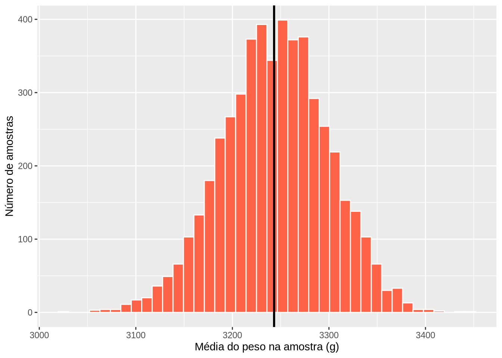
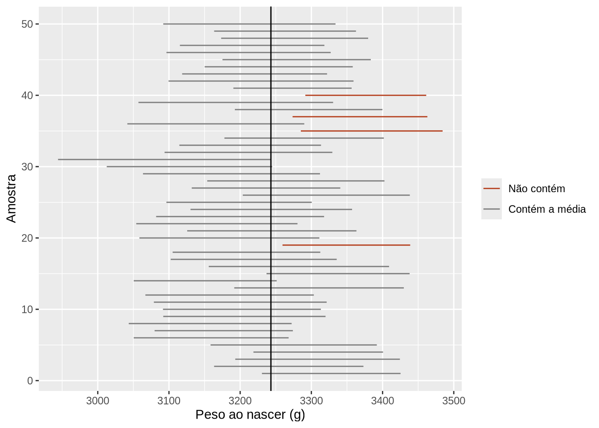
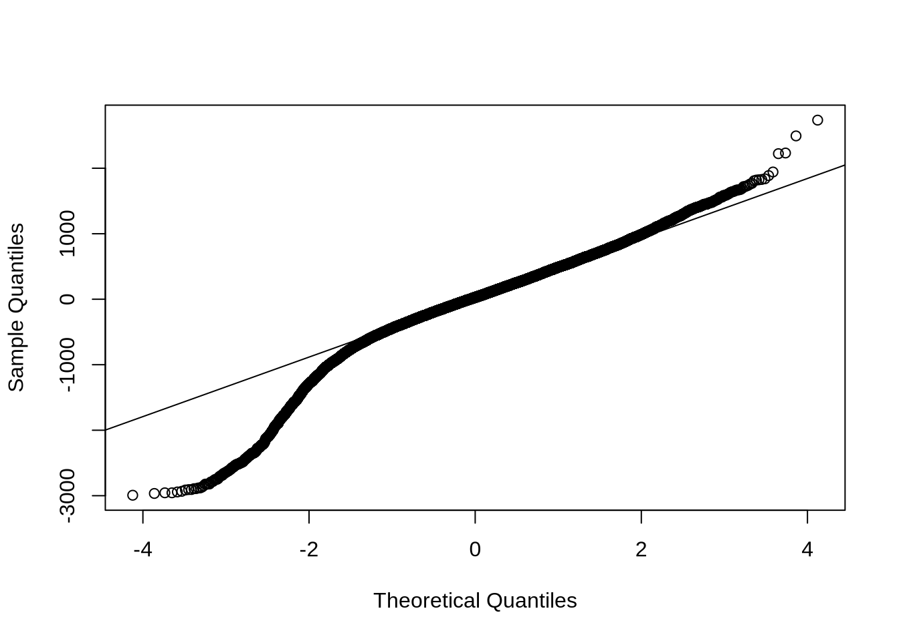

library(tidyverse)
library(here)
library(medicaldata)
source(here("scripts", "preparar-sinasc.R"))13 Comparação de médias: testes t e análise de variância
Encontro previsto: 7 · Pré-requisitos: Capítulo 11 e Capítulo 12 · Pacotes: R base (stats), broom, gtsummary, medicaldata
Objetivos de aprendizagem
Ao final deste capítulo, espera-se que o estudante seja capaz de explicar, com apoio de simulações no R, os conceitos de população, amostra, distribuição amostral, erro padrão, intervalo de confiança, hipóteses e valor-p; executar e interpretar o teste t para uma média, para duas médias independentes (nas versões de Student e de Welch) e para dados pareados; executar uma análise de variância com um fator e comparações múltiplas; verificar os pressupostos desses procedimentos e reconhecer alternativas não paramétricas; e relatar os resultados com estimativas de efeito e intervalos de confiança, e não apenas com valores-p.
Até aqui, descrevemos os dados que tínhamos em mãos. Muitas vezes, porém, queremos ir além: os dados vêm de uma amostra, e a pergunta é sobre a população de onde ela saiu. Este capítulo trata dessa passagem da descrição para a inferência, começando pelos conceitos e seguindo para os testes mais usados na comparação de médias. O foco está em executar os testes no R e, principalmente, em ler e relatar seus resultados de forma correta. A teoria estatística por trás de cada procedimento é tratada com mais profundidade nos livros de BUSSAB; MORETTIN (2002) e MAGALHÃES; LIMA (2002), que fazem parte da bibliografia da disciplina.
13.1 Da descrição à inferência: revisão de conceitos
A população é o conjunto de todas as unidades sobre as quais queremos tirar conclusões, e a amostra é a parte dela que efetivamente observamos. Um parâmetro é uma característica da população, como a média do peso ao nascer de todos os nascidos vivos, e uma estatística é a quantidade correspondente calculada na amostra. Na prática, quase nunca conhecemos o parâmetro, e usamos a estatística para estimá-lo.
O SINASC de Rondônia em 2019 nos permite fazer um experimento que raramente é possível. Como temos todos os 27.028 nascimentos, podemos tratá-los como uma população, cuja média conhecemos, e sortear amostras dela para ver o que acontece com as estimativas. A função sample() sorteia elementos de um vetor, e set.seed() fixa o ponto de partida do sorteio, para que os resultados possam ser reproduzidos.
populacao <- nascidos_analise$peso
media_pop <- mean(populacao)
media_pop
#> [1] 3243.191
set.seed(2019)
amostra <- sample(populacao, size = 100)
mean(amostra)
#> [1] 3327.92A média da amostra é parecida com a da população, mas não igual. Se sortearmos outra amostra, obteremos outro valor. Essa variação de uma amostra para outra é chamada de variabilidade amostral. A função replicate() repete uma operação muitas vezes, e podemos usá-la para sortear 5 mil amostras e guardar a média de cada uma.
set.seed(2019)
medias <- replicate(5000, mean(sample(populacao, size = 100)))
ggplot(tibble(medias), aes(x = medias)) +
geom_histogram(bins = 40, fill = "#ff6347", color = "white") +
geom_vline(xintercept = media_pop, linewidth = 1) +
labs(x = "Média do peso na amostra (g)", y = "Número de amostras")
O histograma mostra a distribuição amostral da média. Ela tem três características importantes. Está centrada na média da população, o que significa que a média amostral não erra sistematicamente para mais ou para menos. Tem forma de sino, próxima da normal, mesmo que o peso ao nascer não seja exatamente normal, como vimos no capítulo anterior; esse é o resultado conhecido como teorema central do limite. E sua dispersão é bem menor que a dos dados individuais. O desvio padrão da distribuição amostral é chamado de erro padrão e pode ser estimado, a partir de uma única amostra, dividindo o desvio padrão pela raiz quadrada do tamanho da amostra.
sd(medias) # erro padrão observado nas 5 mil amostras
#> [1] 54.69597
sd(populacao) / sqrt(100) # erro padrão calculado pela fórmula
#> [1] 54.47541
sd(amostra) / sqrt(100) # erro padrão estimado com uma única amostra
#> [1] 49.04915Os três valores são próximos. É isso que permite, com uma única amostra, dizer algo sobre a precisão da estimativa.
Intervalo de confiança
O intervalo de confiança de 95% para a média é construído, de forma aproximada, somando e subtraindo cerca de dois erros padrão da média amostral. A interpretação correta se refere ao procedimento: se repetíssemos a amostragem muitas vezes e calculássemos um intervalo em cada uma, cerca de 95% desses intervalos conteriam a média da população. Podemos verificar isso com uma simulação. A função t.test(), que veremos em detalhe adiante, calcula o intervalo, guardado no componente conf.int.
set.seed(2019)
intervalos <- replicate(50, t.test(sample(populacao, size = 100))$conf.int)
intervalos <- tibble(
amostra = 1:50,
inferior = intervalos[1, ],
superior = intervalos[2, ],
contem = inferior <= media_pop & media_pop <= superior
)
ggplot(intervalos, aes(y = amostra, xmin = inferior, xmax = superior, color = contem)) +
geom_errorbarh(height = 0) +
geom_vline(xintercept = media_pop) +
scale_color_manual(values = c(`TRUE` = "grey50", `FALSE` = "#b5401f"),
labels = c(`TRUE` = "Contém a média", `FALSE` = "Não contém")) +
labs(x = "Peso ao nascer (g)", y = "Amostra", color = NULL)
mean(intervalos$contem)
#> [1] 0.92
Neste conjunto de 50 amostras, 46 intervalos contêm a média da população. Com um número maior de repetições, a proporção se aproxima de 95%. Na prática, temos uma única amostra e não sabemos se o nosso intervalo é um dos que acertaram, mas sabemos que o procedimento acerta na grande maioria das vezes.
Teste de hipóteses e valor-p
O teste de hipóteses parte de uma hipótese nula (\(H_0\)), em geral a de que não há diferença ou efeito, e de uma hipótese alternativa (\(H_1\)), a de que há. Calcula-se então uma estatística de teste, que mede o quanto os dados se afastam do que seria esperado se a hipótese nula fosse verdadeira. O valor-p é a probabilidade de observar um afastamento tão grande quanto o observado, ou maior, supondo que a hipótese nula seja verdadeira. Valores-p pequenos indicam que os dados são pouco compatíveis com a hipótese nula. Por convenção, usa-se com frequência o limite de 5% (o nível de significância, \(\alpha\)), abaixo do qual se diz que o resultado é estatisticamente significativo.
O valor-p é frequentemente mal interpretado. A declaração da American Statistical Association sobre o tema (WASSERSTEIN; LAZAR, 2016) lembra que ele não mede a probabilidade de a hipótese nula ser verdadeira, não mede o tamanho do efeito nem sua importância, e que conclusões científicas não devem se basear apenas em ele estar acima ou abaixo de um limite. Por isso, ao longo deste capítulo, os resultados serão sempre relatados com a estimativa do efeito e seu intervalo de confiança.
13.2 Teste t para uma média
O teste t para uma média compara a média de uma amostra com um valor de referência. Como exemplo, vamos verificar se o peso médio dos nascidos de mães residentes em Guajará-Mirim difere da média do estado. Aqui, a média estadual é usada como valor de referência fixo, para fins didáticos.
guajara <- nascidos_analise |>
filter(munresnome == "Guajará-Mirim")
t.test(guajara$peso, mu = media_pop)
#>
#> One Sample t-test
#>
#> data: guajara$peso
#> t = 2.625, df = 780, p-value = 0.008835
#> alternative hypothesis: true mean is not equal to 3243.191
#> 95 percent confidence interval:
#> 3255.776 3330.414
#> sample estimates:
#> mean of x
#> 3293.095A saída traz a estatística t, os graus de liberdade (df), o valor-p, a hipótese alternativa, o intervalo de confiança de 95% para a média e a própria média. O peso médio em Guajará-Mirim foi de 3293 gramas, com intervalo de confiança de 3256 a 3330 gramas. Como o intervalo não inclui a média estadual, de 3243 gramas, e o valor-p é menor que 0,05, concluímos que a média do município é um pouco maior que a do estado. A diferença, de cerca de 50 gramas, é estatisticamente significativa, mas sua importância prática precisa ser julgada com conhecimento da área, um ponto que retomaremos no final do capítulo.
13.3 Teste t para duas médias independentes
O uso mais comum do teste t é a comparação das médias de dois grupos independentes, isto é, grupos formados por unidades diferentes, sem relação entre si. A forma mais prática de usar t.test() nesse caso é com uma fórmula, resposta ~ grupo, que se lê “resposta em função do grupo”.
t.test(peso ~ sexo, data = nascidos_analise)
#>
#> Welch Two Sample t-test
#>
#> data: peso by sexo
#> t = -18.064, df = 27013, p-value < 2.2e-16
#> alternative hypothesis: true difference in means between group Feminino and group Masculino is not equal to 0
#> 95 percent confidence interval:
#> -131.8111 -106.0067
#> sample estimates:
#> mean in group Feminino mean in group Masculino
#> 3182.178 3301.087O título da saída, Welch Two Sample t-test, indica que o R usou, por padrão, a versão de Welch do teste, que não supõe variâncias iguais nos dois grupos. A versão clássica, de Student, supõe variâncias iguais e é obtida com o argumento var.equal = TRUE. Como a versão de Welch funciona bem tanto com variâncias iguais quanto diferentes, ela é a escolha mais segura e deve ser mantida na maioria das situações.
O intervalo de confiança refere-se à diferença entre as médias, na ordem dos níveis do fator: feminino menos masculino. Os meninos nasceram, em média, com 119 gramas a mais que as meninas, e o intervalo de confiança dessa diferença vai de 106 a 132 gramas.
Um exemplo com dados de um ensaio clínico ajuda a ver o teste em outro contexto. O pacote medicaldata (HIGGINS, 2022) reúne bases de estudos médicos publicados, preparadas para o ensino. A base opt vem de um ensaio clínico randomizado que avaliou se o tratamento da doença periodontal durante a gravidez reduzia o risco de parto prematuro (MICHALOWICZ et al., 2006), e foi organizada para o ensino por HYUN; HODGES; BREARLEY (2019). As gestantes foram sorteadas para receber o tratamento durante a gestação (grupo T) ou depois do parto (grupo C, controle). Uma das variáveis de desfecho é o peso ao nascer.
t.test(Birthweight ~ Group, data = opt)
#>
#> Welch Two Sample t-test
#>
#> data: Birthweight by Group
#> t = -0.74548, df = 791.55, p-value = 0.4562
#> alternative hypothesis: true difference in means between group C and group T is not equal to 0
#> 95 percent confidence interval:
#> -130.23405 58.54179
#> sample estimates:
#> mean in group C mean in group T
#> 3180.824 3216.670Nesse caso, o valor-p é alto e o intervalo de confiança para a diferença de médias inclui o zero. Os dados não mostram diferença no peso ao nascer entre os grupos. Note que isso não prova que o tratamento não tem nenhum efeito sobre o peso, mas indica que, se houver efeito, ele é provavelmente pequeno, dentro dos limites do intervalo.
13.4 Teste t pareado
Quando as duas medidas comparadas são feitas nas mesmas unidades, como antes e depois de uma intervenção, ou em pares formados de propósito, como irmãos ou casos e controles pareados, as observações não são independentes. Nesses casos, usa-se o teste t pareado, que analisa a diferença dentro de cada par. O pareamento vem do delineamento do estudo, e não dos dados. É preciso saber como os dados foram coletados para escolher entre o teste pareado e o teste para grupos independentes.
Na base opt, a profundidade média de sondagem periodontal, em milímetros, foi medida no início do estudo (BL.PD.avg) e em uma visita posterior (V5.PD.avg). Vamos verificar se, entre as gestantes tratadas, houve mudança nessa medida.
tratadas <- opt |>
filter(Group == "T", !is.na(BL.PD.avg), !is.na(V5.PD.avg))
t.test(tratadas$V5.PD.avg, tratadas$BL.PD.avg, paired = TRUE)
#>
#> Paired t-test
#>
#> data: tratadas$V5.PD.avg and tratadas$BL.PD.avg
#> t = -17.012, df = 319, p-value < 2.2e-16
#> alternative hypothesis: true mean difference is not equal to 0
#> 95 percent confidence interval:
#> -0.4628757 -0.3669118
#> sample estimates:
#> mean difference
#> -0.4148938A diferença média, calculada como valor na visita posterior menos valor inicial, é negativa e seu intervalo de confiança não inclui o zero. Entre as 320 gestantes tratadas com as duas medidas, a profundidade de sondagem diminuiu, em média, 0,41 milímetro. O resultado indica melhora da condição periodontal após o tratamento. Repare que essa comparação, feita apenas no grupo tratado, não tem controle, e o efeito do tratamento seria mais bem avaliado comparando a mudança entre os dois grupos, o que fica como exercício.
13.5 Análise de variância com um fator
Para comparar as médias de três ou mais grupos, usa-se a análise de variância (ANOVA). Poderíamos fazer vários testes t, um para cada par de grupos, mas isso aumentaria a chance de encontrar alguma diferença significativa apenas por acaso. A ANOVA testa, de uma só vez, a hipótese nula de que todas as médias são iguais.
Vamos comparar o peso ao nascer segundo a escolaridade da mãe. Antes do teste, é sempre bom olhar as médias e os desvios padrão de cada grupo.
nascidos_analise |>
filter(!is.na(escmae)) |>
group_by(escmae) |>
summarise(n = n(), media = mean(peso), desvio_padrao = sd(peso))
#> # A tibble: 5 × 4
#> escmae n media desvio_padrao
#> <fct> <int> <dbl> <dbl>
#> 1 Nenhuma 40 3086. 619.
#> 2 1 a 3 anos 516 3162. 607.
#> 3 4 a 7 anos 4760 3227. 553.
#> 4 8 a 11 anos 15633 3251. 533.
#> 5 12 anos ou mais 5767 3248. 557.A função aov() ajusta o modelo, e summary() apresenta a tabela da análise de variância.
modelo_anova <- aov(peso ~ escmae, data = nascidos_analise)
summary(modelo_anova)
#> Df Sum Sq Mean Sq F value Pr(>F)
#> escmae 4 6.655e+06 1663782 5.632 0.000158 ***
#> Residuals 26711 7.890e+09 295403
#> ---
#> Signif. codes: 0 '***' 0.001 '**' 0.01 '*' 0.05 '.' 0.1 ' ' 1
#> 312 observations deleted due to missingnessA tabela decompõe a variabilidade total do peso em duas partes: a variabilidade entre os grupos de escolaridade (escmae) e a variabilidade dentro dos grupos (Residuals). A estatística F é a razão entre as duas, ajustadas pelos graus de liberdade. O valor-p muito pequeno indica que pelo menos uma das médias difere das demais. A mensagem no final avisa que os registros sem escolaridade foram excluídos.
Assim como no teste t, existe uma versão que não supõe variâncias iguais, obtida com oneway.test(). Ela é recomendada quando os grupos têm variâncias diferentes, como é o caso aqui (os desvios padrão vão de cerca de 530 a mais de 600 gramas).
oneway.test(peso ~ escmae, data = nascidos_analise)
#>
#> One-way analysis of means (not assuming equal variances)
#>
#> data: peso and escmae
#> F = 4.8004, num df = 4.00, denom df = 288.52, p-value = 0.0009191A ANOVA indica que há diferença, mas não diz entre quais grupos. Para isso, usam-se as comparações múltiplas, que comparam todos os pares de grupos controlando a chance de erro no conjunto das comparações. O método de Tukey é um dos mais usados.
TukeyHSD(modelo_anova)
#> Tukey multiple comparisons of means
#> 95% family-wise confidence level
#>
#> Fit: aov(formula = peso ~ escmae, data = nascidos_analise)
#>
#> $escmae
#> diff lwr upr p adj
#> 1 a 3 anos-Nenhuma 76.709690 -166.6217047 320.04108 0.9114432
#> 4 a 7 anos-Nenhuma 140.958824 -94.4391623 376.35681 0.4758608
#> 8 a 11 anos-Nenhuma 165.034021 -69.6807942 399.74884 0.3076190
#> 12 anos ou mais-Nenhuma 161.982339 -73.2443184 397.20900 0.3289767
#> 4 a 7 anos-1 a 3 anos 64.249134 -4.4639854 132.96225 0.0798197
#> 8 a 11 anos-1 a 3 anos 88.324331 21.9893822 154.65928 0.0026062
#> 12 anos ou mais-1 a 3 anos 85.272649 17.1487812 153.39652 0.0057680
#> 8 a 11 anos-4 a 7 anos 24.075197 -0.4680211 48.61842 0.0575848
#> 12 anos ou mais-4 a 7 anos 21.023516 -8.0093200 50.05635 0.2780996
#> 12 anos ou mais-8 a 11 anos -3.051682 -25.8932724 19.78991 0.9962426Cada linha traz a diferença entre duas médias (diff), o intervalo de confiança ajustado (lwr e upr) e o valor-p ajustado (p adj). As diferenças significativas aparecem entre o grupo de 1 a 3 anos de estudo e os grupos de 8 a 11 anos e de 12 anos ou mais. O grupo sem escolaridade tem a menor média, mas, por ser muito pequeno, seus intervalos são largos e nenhuma comparação com ele é significativa. Esse é um bom exemplo de como o tamanho dos grupos afeta a precisão das estimativas.
13.6 Pressupostos e alternativas não paramétricas
Os testes t e a ANOVA supõem que as observações são independentes, que os dados de cada grupo (ou os resíduos do modelo) seguem distribuição aproximadamente normal e, nas versões clássicas, que as variâncias dos grupos são iguais. A verificação desses pressupostos segue o que vimos no Capítulo 12, com gráficos como ferramenta principal.
Com amostras grandes, como as do SINASC, o teorema central do limite garante que as médias tenham distribuição aproximadamente normal, mesmo que os dados não sejam, e os testes t e a ANOVA funcionam bem. Com amostras pequenas, a forma da distribuição importa mais. O gráfico quantil-quantil dos resíduos do modelo é uma boa forma de verificá-la.
qqnorm(residuals(modelo_anova), main = "")
qqline(residuals(modelo_anova))
Para a igualdade de variâncias, há testes formais, como var.test(), que compara as variâncias de dois grupos, e bartlett.test(), para três ou mais grupos.
var.test(peso ~ sexo, data = nascidos_analise)
#>
#> F test to compare two variances
#>
#> data: peso by sexo
#> F = 0.92917, num df = 13137, denom df = 13885, p-value = 1.991e-05
#> alternative hypothesis: true ratio of variances is not equal to 1
#> 95 percent confidence interval:
#> 0.8983500 0.9610589
#> sample estimates:
#> ratio of variances
#> 0.9291681
bartlett.test(peso ~ escmae, data = nascidos_analise)
#>
#> Bartlett test of homogeneity of variances
#>
#> data: peso by escmae
#> Bartlett's K-squared = 36.576, df = 4, p-value = 2.203e-07Os dois testes rejeitam a igualdade de variâncias. Com dezenas de milhares de observações, porém, esses testes detectam diferenças muito pequenas. A razão entre as variâncias de meninas e meninos, por exemplo, é de 0,93, muito próxima de 1. O mais importante é a conclusão prática: na dúvida, usar as versões de Welch (t.test() com o padrão do R e oneway.test()), que não dependem desse pressuposto.
Quando os dados são muito assimétricos, têm valores extremos importantes ou são ordinais, e a amostra é pequena, as alternativas não paramétricas são uma opção. Elas trabalham com as posições (postos) das observações ordenadas, e não com os valores, o que as torna menos sensíveis a valores extremos (MINITAB, 2026). O teste de Wilcoxon-Mann-Whitney (wilcox.test()) é a alternativa ao teste t para dois grupos independentes, e o teste de Kruskal-Wallis (kruskal.test()) é a alternativa à ANOVA.
wilcox.test(peso ~ sexo, data = nascidos_analise)
#>
#> Wilcoxon rank sum test with continuity correction
#>
#> data: peso by sexo
#> W = 77953820, p-value < 2.2e-16
#> alternative hypothesis: true location shift is not equal to 0
kruskal.test(peso ~ escmae, data = nascidos_analise)
#>
#> Kruskal-Wallis rank sum test
#>
#> data: peso by escmae
#> Kruskal-Wallis chi-squared = 14.021, df = 4, p-value = 0.007227As conclusões coincidem com as dos testes de médias. É importante saber, porém, que esses testes respondem a perguntas um pouco diferentes. Eles comparam as distribuições como um todo, verificando se os valores de um grupo tendem a ser maiores que os de outro, e não as médias. Por isso, o resultado deve ser relatado com medianas e intervalos interquartis, e não com médias. O teste de Wilcoxon também tem uma versão pareada, obtida com paired = TRUE.
A escolha do teste depende do tipo de variável, do número de grupos, de os grupos serem independentes ou pareados e da forma da distribuição. O capítulo 13 de Statistics at Square One (SWINSCOW; CAMPBELL, 1997) traz um roteiro clássico para essa escolha, e a Tabela 13.1 resume as situações tratadas neste livro.
| Situação | Teste paramétrico | Alternativa não paramétrica |
|---|---|---|
| Uma média e um valor de referência | t.test(x, mu = ) |
wilcox.test(x, mu = ) |
| Dois grupos independentes | t.test(y ~ grupo) |
wilcox.test(y ~ grupo) |
| Duas medidas pareadas | t.test(x, y, paired = TRUE) |
wilcox.test(x, y, paired = TRUE) |
| Três ou mais grupos independentes | aov(), oneway.test() |
kruskal.test() |
| Associação entre duas variáveis numéricas | cor.test() (Capítulo 14) |
cor.test(method = "spearman") |
| Associação entre duas variáveis categóricas | chisq.test() (Capítulo 15) |
fisher.test() |
13.7 Organizando e relatando resultados
O resultado de t.test() é uma lista, e seus componentes podem ser acessados com $. Isso permite usar os valores no texto, com código inline, como fizemos nas seções anteriores.
teste_sexo <- t.test(peso ~ sexo, data = nascidos_analise)
names(teste_sexo)
#> [1] "statistic" "parameter" "p.value" "conf.int" "estimate"
#> [6] "null.value" "stderr" "alternative" "method" "data.name"
teste_sexo$conf.int
#> [1] -131.8111 -106.0067
#> attr(,"conf.level")
#> [1] 0.95
teste_sexo$p.value
#> [1] 1.632753e-72A função tidy(), do pacote broom, transforma o resultado em uma tabela, o que facilita juntar os resultados de vários testes.
broom::tidy(teste_sexo)
#> # A tibble: 1 × 10
#> estimate estimate1 estimate2 statistic p.value parameter conf.low conf.high
#> <dbl> <dbl> <dbl> <dbl> <dbl> <dbl> <dbl> <dbl>
#> 1 -119. 3182. 3301. -18.1 1.63e-72 27013. -132. -106.
#> # ℹ 2 more variables: method <chr>, alternative <chr>Para tabelas de artigos, o pacote gtsummary, visto no Capítulo 11, acrescenta os testes a uma tabela descritiva com add_p(). Por padrão, ele usa o teste de Wilcoxon para variáveis numéricas e o qui-quadrado para categóricas, mas o teste pode ser escolhido com o argumento test. Com add_difference(), a tabela traz a diferença entre os grupos e seu intervalo de confiança.
gtsummary::theme_gtsummary_language(language = "pt", decimal.mark = ",", big.mark = ".")
nascidos_analise |>
select(sexo, peso, idademae, semagestac) |>
gtsummary::tbl_summary(
by = sexo,
statistic = gtsummary::all_continuous() ~ "{mean} ({sd})",
label = list(peso ~ "Peso ao nascer (g)", idademae ~ "Idade da mãe (anos)",
semagestac ~ "Idade gestacional (semanas)"),
missing = "no"
) |>
gtsummary::add_difference(test = gtsummary::all_continuous() ~ "t.test")| Características | Feminino N = 13.1381 |
Masculino N = 13.8861 |
Diferença2 | 95% IC2 | Valor-p2 |
|---|---|---|---|---|---|
| Peso ao nascer (g) | 3.182 (531) | 3.301 (551) | -119 | -132 – -106 | <0,001 |
| Idade da mãe (anos) | 26 (6) | 26 (6) | 0,14 | -0,02 – 0,29 | 0,082 |
| Idade gestacional (semanas) | 38,60 (1,99) | 38,55 (1,97) | 0,05 | 0,00 – 0,10 | 0,047 |
| 1 Média (Desvio Padrão) | |||||
| 2 Teste t com correção de Welch | |||||
| Abreviação: IC = Intervalo de Confiança | |||||
Na redação, o resultado deve trazer a estimativa, o intervalo de confiança e o valor-p, nessa ordem de importância. Um exemplo de redação para a comparação por sexo seria: “Os recém-nascidos do sexo masculino apresentaram peso médio 119 g maior que os do sexo feminino (IC 95%: 106 a 132 g; teste t de Welch, p < 0,001)”. Valores-p muito pequenos são relatados como “p < 0,001”, e não com todos os dígitos.
13.8 Estudo de caso: peso ao nascer e tipo de parto
O peso ao nascer difere entre partos vaginais e cesáreos? A pergunta parece simples, mas a idade gestacional interfere na comparação, já que tanto o peso quanto a via de parto dependem dela. Para tornar os grupos mais comparáveis, vamos restringir a análise aos nascimentos a termo, de 37 a 41 semanas.
a_termo <- nascidos_analise |>
filter(between(semagestac, 37, 41), !is.na(parto))
a_termo |>
group_by(parto) |>
summarise(n = n(), media = mean(peso), desvio_padrao = sd(peso),
mediana = median(peso))
#> # A tibble: 2 × 5
#> parto n media desvio_padrao mediana
#> <fct> <int> <dbl> <dbl> <dbl>
#> 1 Vaginal 7353 3271. 433. 3265
#> 2 Cesáreo 15199 3336. 465. 3325
teste_parto <- t.test(peso ~ parto, data = a_termo)
teste_parto
#>
#> Welch Two Sample t-test
#>
#> data: peso by parto
#> t = -10.293, df = 15510, p-value < 2.2e-16
#> alternative hypothesis: true difference in means between group Vaginal and group Cesáreo is not equal to 0
#> 95 percent confidence interval:
#> -77.15942 -52.47319
#> sample estimates:
#> mean in group Vaginal mean in group Cesáreo
#> 3270.785 3335.601Entre os nascimentos a termo, os recém-nascidos de parto cesáreo pesaram, em média, 65 gramas a mais que os de parto vaginal (IC 95%: 52 a 77 g). Esse resultado não significa que a cesárea aumenta o peso do recém-nascido. Uma explicação mais plausível é o caminho inverso: a suspeita de um bebê grande é uma das razões para indicar a cesárea. Além disso, outras características, como a idade e a escolaridade da mãe, se associam tanto à via de parto quanto ao peso. A comparação de médias descreve uma diferença, mas não identifica sua causa.
Saúde Pública em foco
Significância estatística e relevância prática. Com dezenas de milhares de nascimentos, diferenças muito pequenas resultam em valores-p minúsculos. A diferença de peso por escolaridade, por exemplo, é estatisticamente significativa, mas de poucas dezenas de gramas entre a maioria dos grupos. Se essa diferença tem importância clínica ou sanitária é uma questão que a estatística, sozinha, não responde. Por isso, a estimativa do efeito e seu intervalo de confiança dizem muito mais que o valor-p. Com amostras pequenas, acontece o contrário: diferenças importantes podem não alcançar significância, e um valor-p alto não deve ser lido como prova de que não há diferença.
13.9 Exercícios
Fixação
Repita a simulação da distribuição amostral usando amostras de tamanho 25 e 400. O que acontece com o centro e com a dispersão das médias? Compare o erro padrão observado com o calculado pela fórmula.
Usando a base
nascidos_analise, compare a idade gestacional média entre recém-nascidos dos sexos feminino e masculino com o teste t de Welch. Interprete a estimativa e o intervalo de confiança.Compare a idade da mãe segundo o número de consultas de pré-natal (
consultas_cat) com a ANOVA e com o teste de Kruskal-Wallis. UseTukeyHSD()para identificar quais grupos diferem.
Aplicação
Na base
opt, calcule, para cada gestante com as duas medidas, a mudança na profundidade de sondagem (V5.PD.avg - BL.PD.avg). Compare essa mudança entre os grupos tratado e controle com o teste t para grupos independentes. Essa comparação responde melhor à pergunta sobre o efeito do tratamento do que o teste pareado feito apenas no grupo tratado? Por quê?Compare o peso ao nascer entre filhos de mães adolescentes e não adolescentes, restringindo aos nascimentos a termo. Redija o resultado no formato apresentado na Seção 13.7.
Desafio
- Faça um estudo de simulação para verificar a proporção de intervalos de confiança de 95% que contêm a média da população, usando mil amostras de tamanho 10, 30 e 100. Repita para uma variável muito assimétrica, como o número de casos novos diários de COVID-19 em um estado. Em que situações a cobertura se afasta de 95%?
13.10 Síntese
A inferência estatística usa uma amostra para tirar conclusões sobre a população. A média amostral varia de uma amostra para outra, e essa variação é descrita pelo erro padrão. O intervalo de confiança de 95% é construído por um procedimento que, em repetidas amostras, contém o parâmetro em cerca de 95% das vezes, e o valor-p mede a compatibilidade dos dados com a hipótese nula, sem medir o tamanho nem a importância do efeito. O teste t compara uma média com um valor de referência, duas médias de grupos independentes (de preferência na versão de Welch, padrão do R) ou duas medidas pareadas. A análise de variância compara três ou mais médias, e as comparações múltiplas de Tukey identificam quais grupos diferem. Os testes de Wilcoxon e de Kruskal-Wallis são alternativas que comparam distribuições, e não médias. Os resultados devem ser relatados com a estimativa, o intervalo de confiança e o valor-p.
| Função | Pacote | Finalidade |
|---|---|---|
set.seed(), sample(), replicate() |
base | Simulação e sorteio de amostras |
t.test() |
stats | Testes t para uma média, duas médias e dados pareados |
aov(), summary(), TukeyHSD() |
stats, base | Análise de variância e comparações múltiplas |
oneway.test() |
stats | Análise de variância de Welch |
var.test(), bartlett.test() |
stats | Comparação de variâncias |
qqnorm(), qqline(), residuals() |
stats | Verificação da normalidade dos resíduos |
wilcox.test(), kruskal.test() |
stats | Alternativas não paramétricas |
tidy() |
broom | Resultados em formato de tabela |
add_p(), add_difference() |
gtsummary | Testes e diferenças em tabelas descritivas |
13.11 Para saber mais
O capítulo 18 do Manual de R para Epidemiologistas (BATRA et al., 2021) apresenta os mesmos testes no R base e com os pacotes rstatix e gtsummary. Na versão online de Practical Statistics in Medicine with R (BOUGIOUKAS, 2025), os capítulos 12 a 14 revisam os conceitos de estatística, probabilidade e distribuições usados aqui; os testes estatísticos são tratados nos capítulos seguintes da edição impressa. O capítulo 13 de Statistics at Square One (SWINSCOW; CAMPBELL, 1997) é uma referência curta e clara para a escolha do teste, e o mesmo tema é discutido em português no vídeo Como escolher o teste estatístico adequado? Uma discussão para te ajudar nessa decisão. O texto de suporte do Minitab sobre métodos não paramétricos (MINITAB, 2026) explica, de forma acessível, quando eles são indicados. Para os conceitos de população, amostra e planos amostrais, o livro online Amostragem com R é uma boa continuação.
| Obra | Capítulo | Seções de interesse |
|---|---|---|
| Manual de R para Epidemiologistas (BATRA et al., 2021) | 18. Testes estatísticos simples | Pacote R base; Pacote gtsummary |
| Practical Statistics in Medicine with R (BOUGIOUKAS, 2025) | 12. Introduction to Statistics; 13. Basic Concepts of Probability; 14. Probability distributions | Conceitos de amostragem e distribuição normal |
| Statistics at Square One (SWINSCOW; CAMPBELL, 1997) | 13. Study design and choosing a statistical test | Roteiro para a escolha do teste |
| Noções de probabilidade e estatística (MAGALHÃES; LIMA, 2002) | — | Inferência para médias |
| Estatística básica (BUSSAB; MORETTIN, 2002) | — | Inferência para duas populações; análise de variância |